-
缠中说禅走势级别延续定理一：在更大级别缠中说禅走势中枢产生前该级别走势类型将延续。也就是说只能是只具有该级别缠中说禅走势中枢的盘整或趋势的延续。 -
缠中说禅走势级别延续定理一：在更大级别缠中说禅走势中枢产生前该级别走势类型将延续。也就是说只能是只具有该级别缠中说禅走势中枢的盘整或趋势的延续。 -
缠中说禅走势中枢中心定理一：走势中枢的延伸等价于任意区间 [dngn] 与 [ZDZG] 有重叠 换言之 若有 Zn使得 dn＞ZG 或 gn＜ZD则必然产生高级别的走势中枢或趋势及延续 。
-
缠中说禅走势中枢中心定理二：前后同级别的两个缠中说禅走势中枢后GG＜前DD等价于下跌及其延续；后DD＞前GG等价于上涨及其延续后ZG＜前ZD且后GG前DD或后ZD＞前ZG且后DD前GG则等价于形成高级别的走势中枢。
-
第三类买卖点定理：一个次级别走势类型向上离开缠中说禅走势中枢然后以一个次级别走势类型回试其低点不跌破ZG则构成第三类买点；一个次级别走势类型向下离开缠中说禅走势中枢然后以一个次级别走势类型回抽其高点不升破ZD则构成第三类卖点。- 一定要注意 并不是任何回调回抽都是第三类买卖点 必须是第一次 而且 第三类买卖点后 并不必然是趋势也有进入更大级别盘整的可能。
- 以笔中枢为例第三类买点形成时本笔结束时并不需要MACD黄白线拉回0轴当然也有回0轴的情况关键是这一笔要结束且高于中枢。
- 这一笔的次级别可能是盘被即下跌+盘整+下跌产生背驰也可能是下跌+盘整+上涨形态各异。 个人认为下跌+盘整+上涨往往是因为第一次下跌太猛导致盘整后不会再下跌进而直接转成上涨。
- 每一笔结束还有另外的方式，就是在次级别是喇叭口中枢，这个中枢的最后一笔下形成三买。
- 由于5F不足以应付T+1因此30F一笔是3买操作的最低级别。
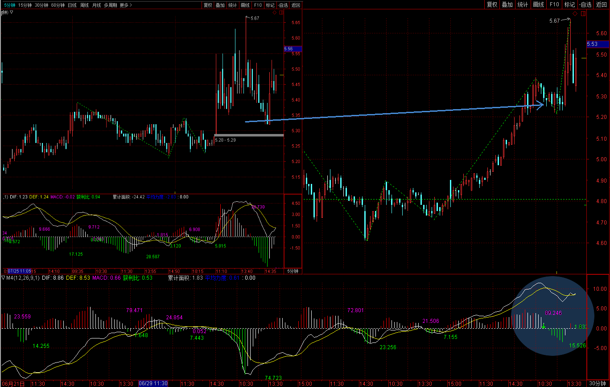
正文
娇注：中枢级别扩张重点还在于中枢的原始定义没有至少3个连续次级别走势类型重叠的部分 是扩张不了高级别中枢的。
-
注1：主要讲述中枢级别扩张和三买卖点。
-
注2：三个日三买卖例子日三买：工商银行601398北辰实业601588日三卖：金宇车城000803。30分钟级别走势类型离开日中枢然后30分钟级别走势类型回抽日中枢不回到日中枢的[ZD,ZG]。
原网址：http://blog.sina.com.cn/s/blog_486e105c010007zw.html
前面已经很明确地指出缠中说禅走势中枢由前三个连续次级别走势类型的重叠部分确定其后的走势有两种情况：一、该走势中枢的延伸。二、产生新的同级别走势中枢（娇注：二之1类：中枢新生二之2类：产生新同级别中枢后和前中枢扩张成大中枢）。而在趋势里同级别的前后缠中说禅走势中枢是不能有任何重叠的这包括任何围绕走势中枢产生的任何瞬间波动之间的重叠。因此如果三个连续次级别走势类型的重叠区间虽然不和前面的走势中枢有任何重叠但围绕该中枢产生的波动触及前面走势中枢延续时的某个瞬间波动区间这时候就不能认为该走势类型是趋势而只是产生一个更大级别的缠中说禅走势中枢（娇注：中枢扩张；本博注：中枢扩张在17课的答疑中对“在路上”的提问于(2006-12-25 21:43:23)时阐述过19课的答疑对“wy1499”于2006-12-27 16:20:50时的提出作出过解释）。
这里必须把两种情况严格区分（本级别中枢结束之后的两种情况1. 形成新的本级别中枢2. 中枢扩张级别增加）。
-
一、走势中枢以及其延伸。
这种情况下所有围绕走势中枢产生的前后两个次级波动都必须至少有一个触及走势中枢的区间。否则就必然产生一个新的三次连续次级走势类型的重叠部分离开原来的走势中枢这与走势中枢的延续矛盾。
-
二、一个走势中枢完成前其波动触及上一个走势中枢或延伸时的某个瞬间波动区间由此产生更大级别的走势中枢。
一个简单的例子就能区别以上的情况例如一个股票开盘立刻封涨停那么只能算是一分钟级别上出现了走势中枢的延伸无论这个延伸有多长时间都不可能产生更大级别的走势中枢。如果该股票第二天开始继续开盘涨停那么就形成一个一分钟级别上的趋势这个趋势可以无限延伸下去但只要依然只是只形成一分钟的走势中枢无论能连续涨停多少天都不足以形成即使是五分钟的走势中枢除非中途有打开涨停的时候。还有一种特殊的情况就是所谓的庄股如果有一个庄家特别有毛病每天就成交一次每天的价位都一样这样也只形成一个一分钟的走势中枢大级别的中枢都不能形成。
换言之走势中枢的延伸与不断产生新的走势中枢并相应围绕波动互不重叠而形成趋势在这两种情况下一定不可能形成更大级别的走势中枢。而要形成一个更大级别的走势中枢必然要采取第三种的方式就是围绕新的同级别走势中枢产生后的波动与围绕前中枢的某个波动区间产生重叠。由此可马上得到一个重要的定理：
缠中说禅走势级别延续定理一： 在更大级别缠中说禅走势中枢产生前该级别走势类型将延续。也就是说只能是只具有该级别缠中说禅走势中枢的盘整或趋势的延续。
看看去年指数的走势就知道该定理的重要。很多人总是说怎么都涨那么多了还涨明白这个定理就知道要这个市场跌现在这种最多只出现过日线走势中枢的走势在周线走势中枢出现前不可能结束。而且从去年8月份开始的走势甚至连日线的走势中枢都没形成过最多就是30分钟的要结束这种走势首先要形成日线的中枢。明白这个定理就不会整天自己吓自己。这里由定理一很简单就能证明一个更重要的定理,对走势改变给一个更精确、预先的界定：
缠中说禅走势级别延续定理二：`更大级别缠中说禅走势中枢产生当且仅当围绕连续两个同级别缠中说禅走势中枢产生的波动区间产生重叠。
这里来一个比喻就好理解了缠中说禅走势中枢就如同恒星和围绕该恒星转动的行星构成一个恒星系统。而两个同级别恒星系统要构成一个更大级别的系统首先必然要至少是其中的外围行星之间发生关系这就是定理二说的东西。
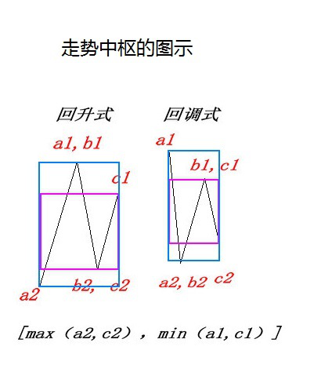
有了上面的定理就可以很精确地讨论走势中枢的问题了：根据走势中枢的数学表达式： A、B、C分别的高、低点是a1\a2,b1\b2,c1\c2则中枢的区间就是[max（a2,b2,c2）min（a1,b1,c1）]。而中枢的形成无非两种一种是回升形成的一种是回调形成的。对于第一种有a1=b1,b2=c2；对第二种有a2=b2,b1=c1。但无论是哪种情况中枢的公式都可以简化为[max（a2,c2）min（a1,c1）]。显然A、C段其方向与中枢形成的方向是一致的由此可见在中枢的形成与延伸中由与中枢形成方向一致的次级别走势类型的区间重叠确定。
例如回升形成的中枢由向上的次级别走势类型的区间重叠确定反之依然。为方便起见以后都把这些与中枢方向一致的次级别走势类型称为Z走势段按中枢中的时间顺序分别记为Zn等而相应的高、低点分别记为gn、dn,定义四个指标,GG=max(gn),G=min(gn),D=max(dn),DD=min(dn)n遍历中枢中所有Zn。特别地再定义ZG= min(g1、g2),ZD=max(d1、d2)显然[ZDZG]就是缠中说禅走势中枢的区间由此有了如下定理：
缠中说禅走势中枢中心定理一：走势中枢的延伸等价于任意区间[dngn]与[ZDZG]有重叠。换言之若有Zn使得dn＞ZG或gn＜ZD则必然产生高级别的走势中枢或趋势及延续。
缠中说禅走势中枢中心定理二：前后同级别的两个缠中说禅走势中枢后GG＜前DD等价于下跌及其延续；后DD＞前GG等价于上涨及其延续。后ZG＜前ZD且后GG≥前DD或后ZD＞前ZG且后DD≤前GG则等价于形成高级别的走势中枢。
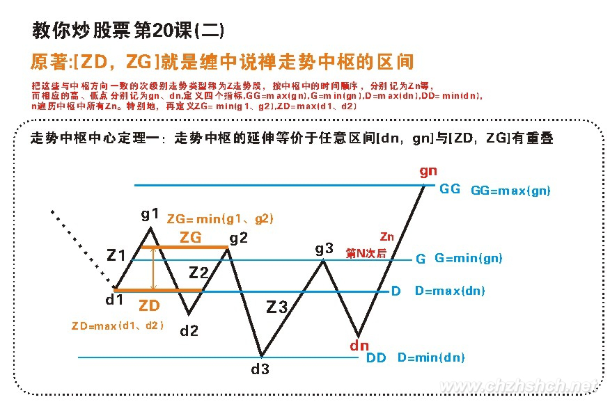 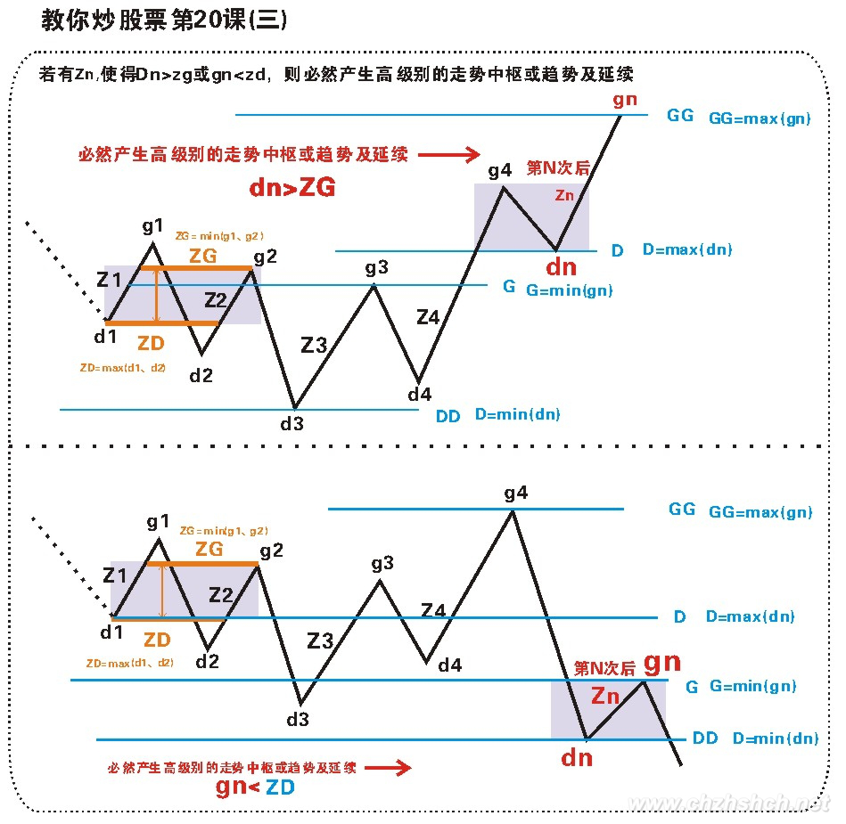
由定理一可以得到第三类买卖点定理：一个次级别走势类型向上离开缠中说禅走势中枢然后以一个次级别走势类型回试其低点不跌破ZG则构成第三类买点；一个次级别走势类型向下离开缠中说禅走势中枢然后以一个次级别走势类型回抽其高点不升破ZD则构成第三类卖点。
(注：缠师在24课(2007-01-18 22:11:08)对600832的第三类买点做了如下澄清:注意第三类买点的结束位置不一定是整个回拉的最低位置。因为一个三段回来C段并不一定创新低。在复杂的回拉中还有三角形5段回拉的只要最后一次回拉不回到原来的中枢就可以了。卖点也理应同理)
例如工商银行在12月14日构成典型的日线级别第三类买点；北辰实业在11月14日构成典型的日线级别第三类买点；000803在1月20日构成典型的日线级别第三类卖点。
注意第三类买卖点比第一、二类要后知后觉但如果抓得好往往不用浪费盘整的时间比较适合短线技术较好的资金但一定要注意并不是任何回调回抽都是第三类买卖点必须是第一次。而且第三类买卖点后并不必然是趋势也有进入更大级别盘整的可能但这种买卖之所以必然赢利就是因为即使是盘整也会有高点出现。操作策略很简单一旦不能出现趋势一定要在盘整的高点出掉这和第一、二类买点的策略是一样的。(娇注：一买后不突破长期均线依旧男上位缠绕盘整二买后破一买低点退出）(女上位是短期均线在长期均线之上代表多头男上位是短期均线在长期均线之下代表空头)
- 思考题一：第三类买卖点有可能和同级别的第二类买卖点重合吗？
- 思考题二：工商银行在12月22日构成日线级别第三类买点吗？
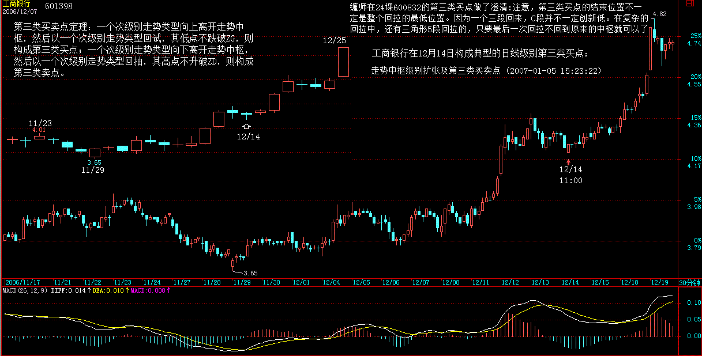 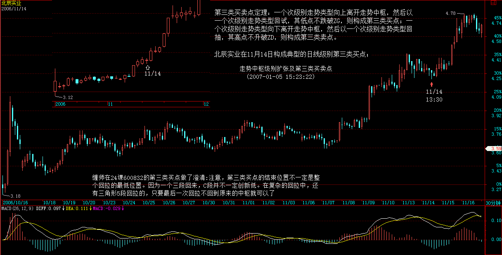 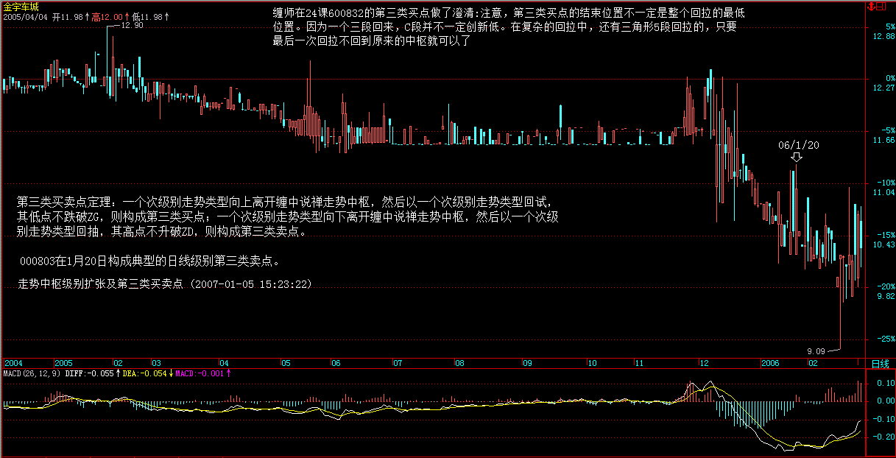 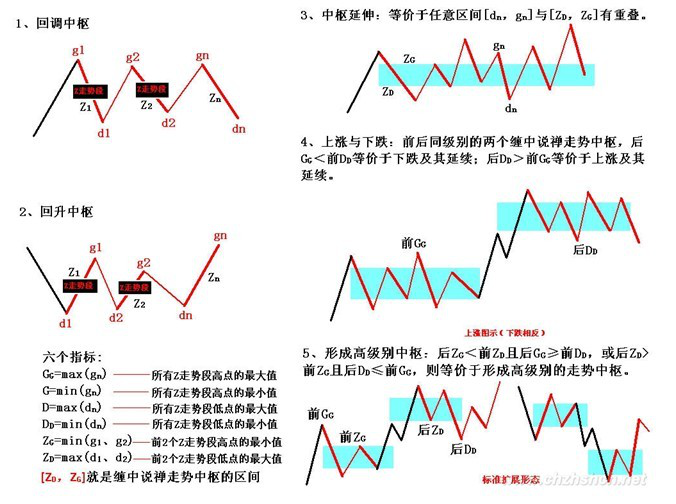 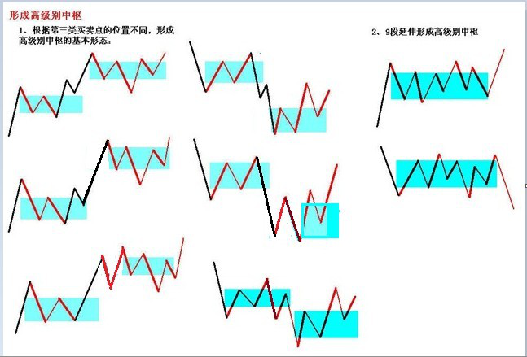
每日解盘(2007-01-05 15:30:38)
这新浪是不是人太多了上来都困难。发了好几次都不行。
大盘今天走势十分良好典型的补涨走势。关键还是成分股成分股也分一线、二线、三线的。现在一线的银行股等休息二线就启动十分正常把握这节奏就能玩多了轮资金利用率也高了。 (2007-01-05 15:30:38)
=================
每日解盘(2007-01-08 15:33:49)
牛市炒股票基本没有什么技术含量就是板块轮动。例如现在的牛市第一阶段炒成分股先启动一线的也就是盘子最大的然后二线、三线基本就这节奏。一线不会大跌一旦大盘要冲关之类活动一线就会出来露脸。一线是反复炒。
牛市别谈论什么个股的顶部想想96年发展在6元时谁可以知道1年后发展10送10后还敢冲50？ (2007-01-08 15:33:49)
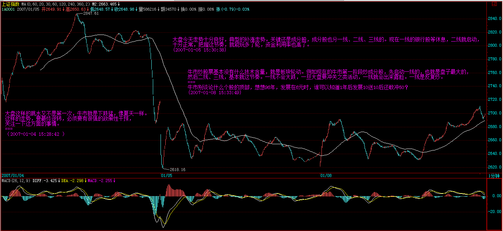 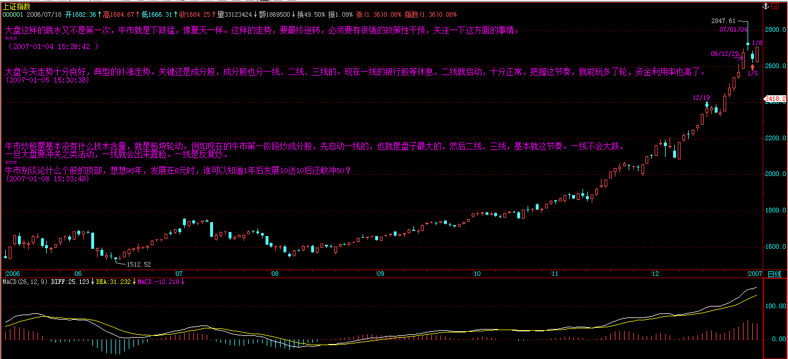
今天给出了最标准的数学公式把公式理解了一切的分类就很清楚了公式比语言要简单关键理解好了。
所有图形都符合的。你觉得不符合一定是理解有问题耐心点。 (2007-01-05 15:39:13)
各位耐心看一边自己画图一边把下面一段啃下来其实是很简单的：
为方便起见以后都把这些与中枢方向一致的次级别走势类型称为Z走势段按中枢中的时间顺序分别记为Zn等而相应的高、低点分别记为gn、dn,定义四个指标,GG=max(gn),G=min(gn),D=max(dn),DD=min(dn)n遍历中枢中所有Zn。特别地再定义ZG= min(g1、g2),ZD=max(d1、d2)显然[ZDZG]就是缠中说禅走势中枢的区间由此有了如下定理：
缠中说禅走势中枢中心定理一：走势中枢的延伸等价于任意区间[dngn]与[ZDZG]有重叠。换言之若有Zn使得dn＞ZG或gn＜ZD则必然产生高级别的走势中枢或趋势及延续。
缠中说禅走势中枢中心定理二：前后同级别的两个缠中说禅走势中枢后GG＜前DD等价于下跌及其延续；后DD＞前GG等价于上涨及其延续。后ZG＜前ZD且后GG≥前DD或后ZD＞前ZG且后DD≤前GG则等价于形成高级别的走势中枢。 (2007-01-05 15:52:23)
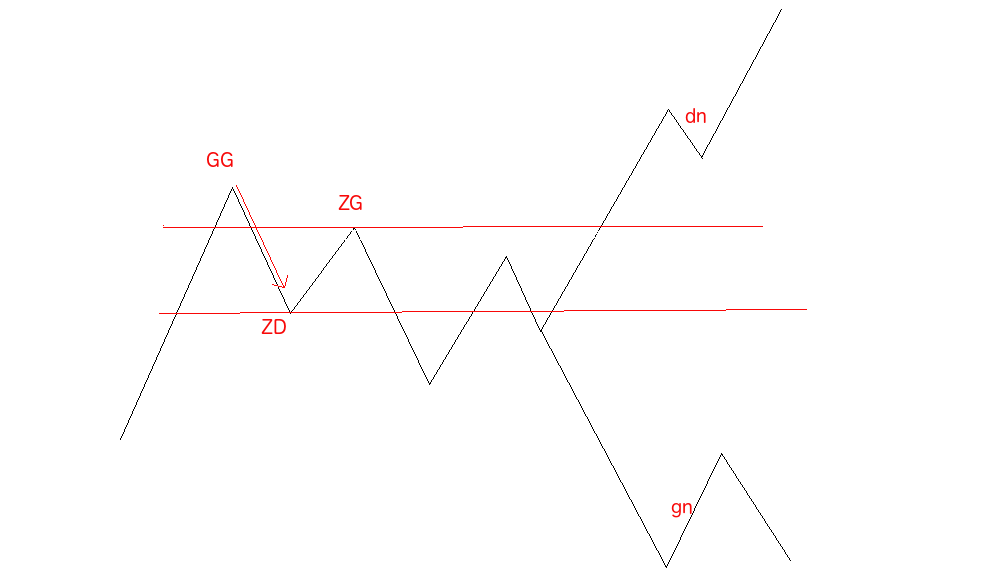
[匿名] 新年好 2007-01-05 16:29:40 缠姐给讲一讲离开和回到中枢 吧？我怎么越来越糊涂了。
===
怎么会糊涂这么明确的分类总共三种情况好好研究清楚。 (2007-01-05 16:38:35)
各位不要把东西混了中枢的离开返回是针对围绕中枢的运动说的这里研究的是中枢自身的变化也就是中枢延续与产生新中枢以及产生更高级别的中枢这三种情况的问题。
三种情况有最严格的定义把这些情况给搞清楚然后多看图去印证。 (2007-01-05 16:52:13)
上面有人争论龙头的问题。工行上市以后最大的龙头只能是工行。不过人寿上市以后将成为第二个最重要的龙头这是用来打开上涨空间的工行是中流砥柱人寿是开路先锋。
(2007-01-08 21:22:24)
总书记 2007-01-05 15:48:58 请问楼主 我下面的分析对吗?
600004在30分钟级别上:
12141330-12281500构成下跌
12211100-12251030形成一个缠中说禅中枢
12271000-12281000形成第二个缠中说禅中枢
其后走势不确定 因为一直还没有形成缠中说禅中枢
工商银行现在是不是该考虑解套的时候了？昨天高价进的。
非常谢谢楼主！
====
首先请不要学什么了第一要学的是必须遵守买卖的规则一定只能在买点上买。为什么要追高没有任何股票是值得追高的。
在日线上工行第三类买点出现后至少站在日线级别就没有任何值得的买点。
当然站在5分钟或15分钟级别下周会有一个第一类买点但今天形成的中枢将有很大的吸引力目前已经形成两个中枢在5分钟等短线图上目前最好的走势就是能围绕今天所形成的中枢消化压力然后再找机会上攻。
中线该股问题不大短线就看这两个中枢的牵引与压力的化解了。 (2007-01-05 15:57:29)
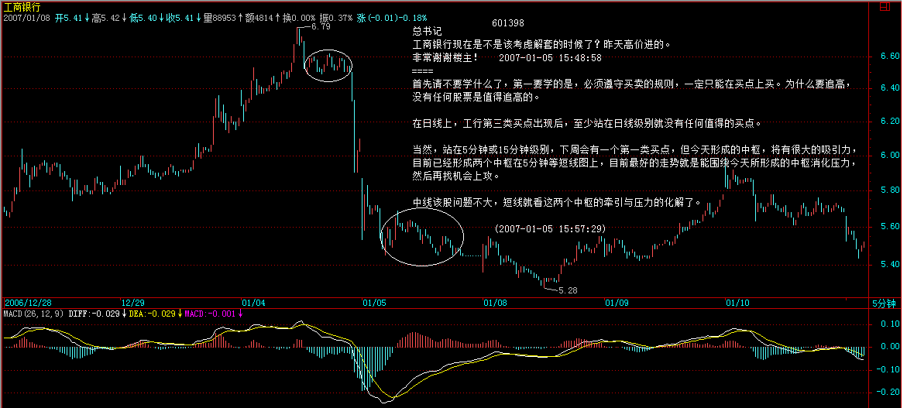
[匿名] 学行 2007-01-05 16:52:00 000803在1月20日构成典型的日线级别第三类卖点？ 是不是 笔误？
===
第三类卖点其后就出现大幅度的跳水十分典型。
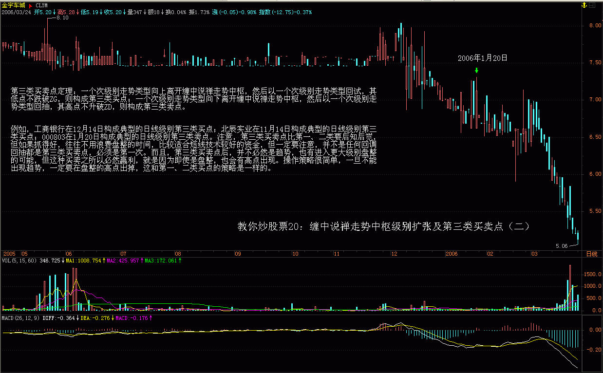 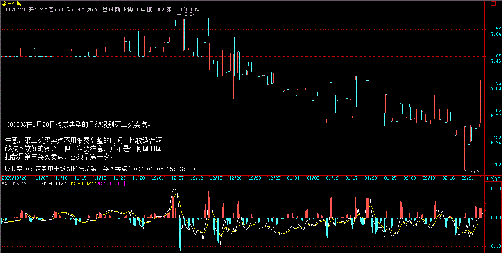 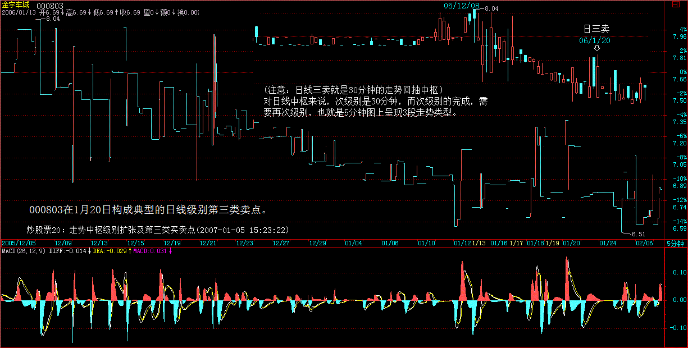
[匿名] 新年好 2007-01-05 15:51:16
请问缠姐这段话中“为方便起见以后都把这些与中枢方向一致的次级别走势类型称为Z走势段按中枢中的时间顺序分别记为Zn等而相应的高、低点分别记为gn、dn,定义四个指标,GG=max(gn),G=min(gn),D=max(dn),DD=min(dn)n遍历中枢中所有Zn。特别地再定义ZG= min(g1、g2),ZD=max(d1、d2)”的GG=max(gn),G=min(gn),D=max(dn),DD=min(dn)都是什么意思代表什么指标？
===
这什么指标都不是是 本ID定义的定义的意思文章中已经很清楚了请耐心一个字一个字地磨清楚。 (2007-01-05 16:00:00)
[匿名] WHQ999 2007-01-05 16:27:55
感谢缠妹.这两天已经进了二线蓝筹了,跟您学到了好多东西,但心态还靠各位自己锻炼了,哈哈
===
这个节奏 就对了但一定要是成分股这样容易把握。非成分的机会要到以后。另外一线成分股也是有机会的下跌太多后就可以进了这类个股会反复炒的。 (2007-01-05 16:40:17)
[匿名] 老老没用 2007-01-05 16:39:37 第一类买卖点在级别的意义上好理解。时间段上呢？除了新股和经历漫长熊市的股后入市的人很难找到第一类买点。起码在日线的级别上。请教缠姑娘。谢谢！
====
日线上是少见但二类、三类到处都是没人告诉你一定要第一类的。 (2007-01-05 16:41:22)
[匿名] 带套操作 2007-01-05 16:45:23 MM您说的中线指的是几个月？如600832您说过过了压力线则中线行情展开工行中线没问题等等望指教谢谢！
===
中线就是在周线级别上中短线指日线级别短线指30分钟超短指5分钟或1分钟的最小级别。
600832昨天告诉你一个关键的位置11。58今天没有跌破是好事12。3到12。6是短线压力区域。
中线压力是12。43的120周线因此目前面临周线与日线的压力区有反复很正常。最终突破是没问题的只是时间快慢的问题。 (2007-01-05 17:02:49)
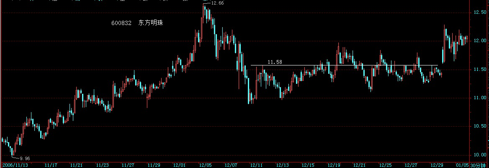
[匿名] 带套操作 2007-01-05 16:51:31
把工行当深发展了中线到春节前天天研读MM的老帖受益匪浅。可惜还是被贪字套住了惭愧！
===
对于日线上上涨过猛的股票看回调打短差就要看小级别的图。而且一般股票上涨一倍后都有压力特别是大盘的。不过中线问题不大耐心点有机会可以打点短差反抽是有的。
另外打下来对人寿的开盘也有一定的压制大家都希望能买到好价位如果工行站8元人寿还不开了60元？这样大家都别玩了。
无论是二线成分股的启动以及人寿的开盘以及中行的禁售上市都要求工行等跌所以很正常的事情而且是不难预见的事情这种小插曲对工行的中线走势是没有影响的。 (2007-01-05 17:11:25)
[匿名] 新年好 2007-01-05 16:08:22 请问缠姐“工商银行在12月14日构成典型的日线级别第三类买点”；是不是说工商银行在30分钟线上12.12,10:00-12.15,10:00形成了一个中枢再根据“由定理一可以得到第三类买卖点定理：一个次级别走势类型向上离开缠中说禅走势中枢然后以一个次级别走势类型回试其低点不跌破ZG则构成第三类买点；一个次级别走势类型向下离开缠中说禅走势中枢然后以一个次级别走势类型回抽其低点不升破ZD则构成第三类卖点。”12.14号如果是第三类买点的话在30分钟线这天应该是离开中枢后的一个回试我怎么看不出来啊。并没有离开中枢阿。请缠姐指教。
====
临走回答你搞清楚是看哪个级别的。
对日线中枢来说次级别是30分钟而次级别的完成需要再次级别也就是5分钟图上呈现3段走势类型。这在工行14那天有着完美的表现。那天14。40左右刚好完成这三段5分钟的走势类型你可以精确地找到4。2元的买点。
请把这三层次的级别关系搞清楚。
再见。(2007-01-05 17:25:31)
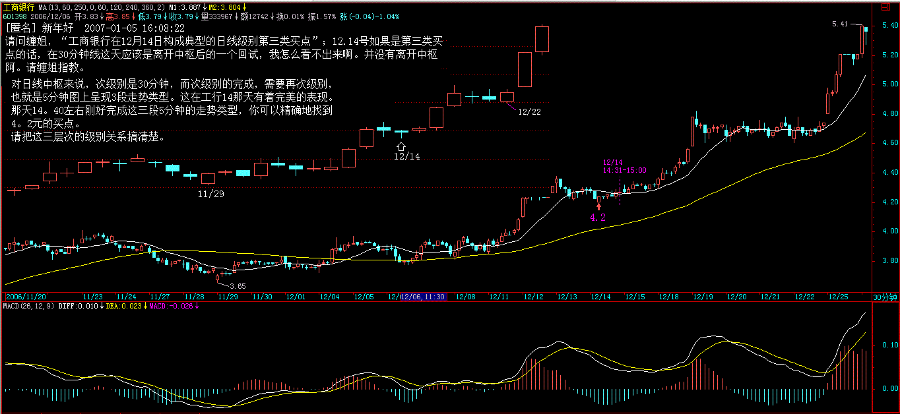 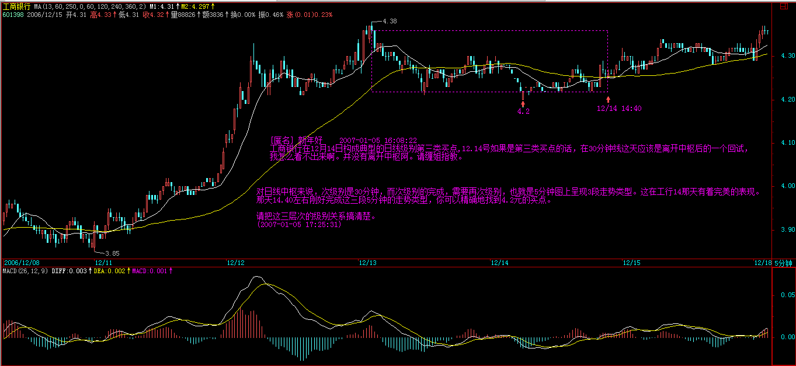 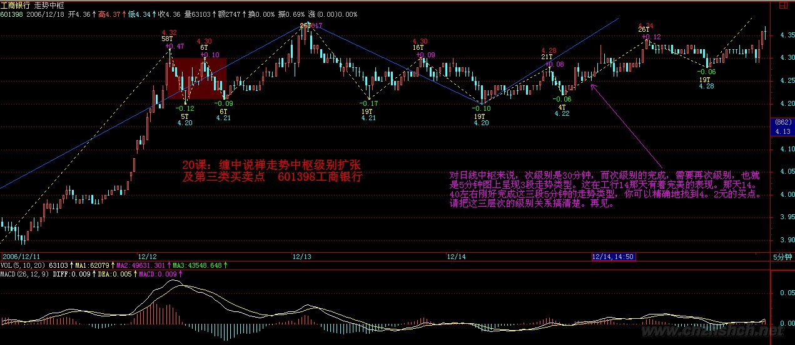 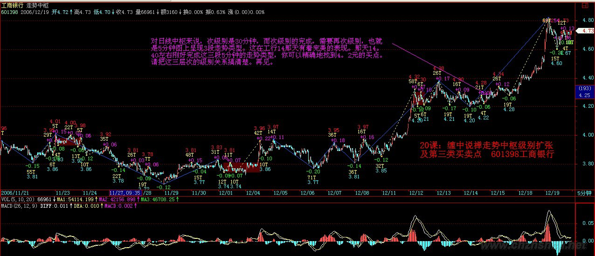 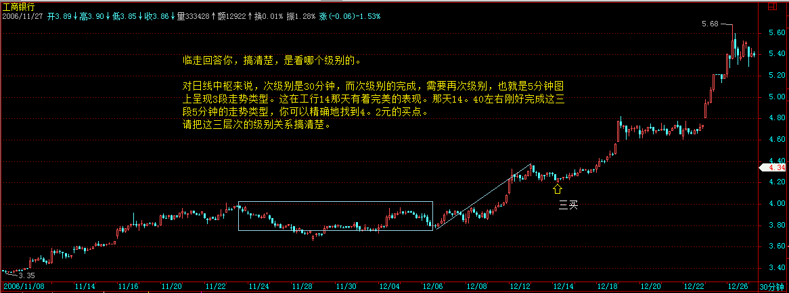 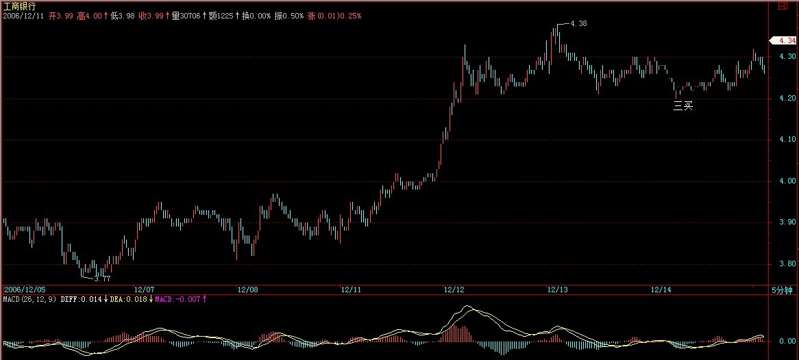
心宇
2007-01-05 17:04:14 新手该如何开始？先学习是不是等学完了股市早凉了不学就进去就是…… 缠mm可咋好呢？
===
学好一招就可以了例如你把今天说的第三类买点搞清楚在牛市中足以战胜95%的人。 (2007-01-05 17:13:27)
先下再见。有问题请先放下来。 (2007-01-05 17:15:02)
=====周末音乐会23：二十世纪的保守主义 486e105c0100080e===== 有事外出大家将就着听这两作品在二十世纪的音乐中算比较通俗的应该不难听下来。
有问题请留下晚上如果不能回来明天回来再说。 (2007-01-06 11:13:39)
=====叫床与歌唱 486e105c01000813=====
各位好好休息吧大周末的就别还股票了心情放松点股票只是生活的一个侧面。
先下了明天再股票吧。 (2007-01-07 15:24:22)
=====《论语》详解：给所有曲解孔子的人（45） 486e105c01000825===== [匿名] whq999 2007-01-08 15:26:26
ding! 今天二线蓝酬很好,明天请缠妹继续!谢谢,哈哈
牛市炒股票基本没有什么技术含量就是板块轮动。例如现在的牛市第一阶段炒成分股先启动一线的也就是盘子最大的然后二线、三线基本就这节奏。一线不会大跌一旦大盘要冲关之类活动一线就会出来露脸。一线是反复炒。
牛市别谈论什么个股的顶部想想96年发展在6元时谁可以知道1年后发展10送10后还敢冲50？ (2007-01-08 15:33:49)
[匿名] CCTV 2007-01-08 15:35:38
妹子看你的回答说600018月线看能填缺口我前两天买了。今天涨停估计什么时候能填完缺口？
===
你的理解错误该股月线的中枢在哪里？根据中枢回抽的次级别原则10。2元的中枢下沿应该被一个次级别的也就是最多是周线的走势类型所回抽由此你自己也可以判断大概需要的时间。
注意我上次说的是回抽中枢而不是补缺口因为前者是理论所保证的后者并没有什么必然性。 (2007-01-08 15:39:19)
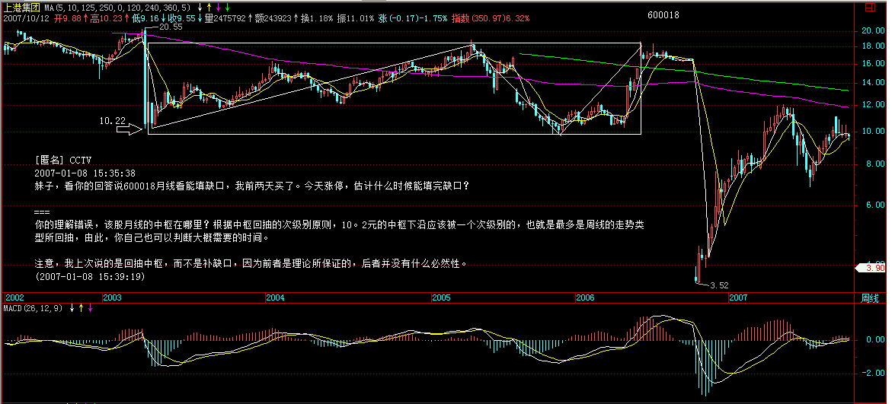
先下再见。 (2007-01-08 15:53:56)
[匿名] 摄影之友 2007-01-08 20:19:31
[匿名] 后学
2007-01-08 19:54:23 按我的理解中枢的区间就是ｂ１－ｂ２这一段． 不知对吗请老师指正
不对.你那是仅仅是当C1>b1(a1=b1),及a2>b2(c2=b2)时.
==
谢谢有理解清楚的如果有时间也可以回答别人的问题这样锻炼了自己也可以帮本ID一点忙。
(2007-01-08 20:45:31)
[匿名] 清 2007-01-08 16:14:52
看过了“本ID”前两日对牛市发生调整可能因素的见解大概是需要中央调控希望没有理解错而今天中国人民银行存款准备金率上调0.5个百分点应该就是其中一个预警吧？但牛市依然加速难道真的需要再出现类似加息或者新华社评论文章吗？想听听阁下的见解。还是那句牛市行情原来还很累人。 谢谢！
==
今天这种不算什么以前不试过10几道金牌才把股市打下来的例子。只要轮动依然市场就是良性发展没有什么可值得担心的关键要踩准节奏当然如果没时间关注短线已经轮动的就把选好的成分股拿好了最终基本涨幅都相差不大只是先后问题。 (2007-01-08 20:50:22)
[匿名] 不知 2007-01-08 20:23:21
缠mm学了你的炒股理论非常佩服你！现在学习中有三个问题请教。
-
某级别的走势若其次级别完成上涨+盘整+下跌或下跌+盘整+上涨三段走势类型是否能算是在该级别形成一个中枢？该中枢是否就等同于次级别盘整的中枢？或是次级别走成上涨+盘整+下跌还必需完成多一段上涨的走势才构成该级别的中枢？
首先把概念搞清楚次级别的上涨就是在次级别的次级别上至少形成两个中枢如果你说的次级别上涨+次级别盘整+次级别下跌那就已经是次级别上的三段走势了当然就构成本级别的中枢了。如果只是次级别次级别上涨+次级别次级别盘整+次级别次级别下跌那只构成一段次级别走势那还需要两段产构成本级别的中枢。这是很明确严格的。
-
如果一只股票开盘就封涨停而脱离原来的中枢如果中间有打开涨停这时候是否也构成第三类买点？
还是要概念清楚什么叫原来的中枢？首先要明确的是原来的中枢究竟是什么级别的如果是周线级别的一天里无论如何走都不可能构成其次级别的回抽。关键是看级别。
-
比如最近中国银行的跳水在5分钟图上还没来得及出现第三类卖点就急跌了！等反弹也在5.6元左右了！跌了3角钱啊！象这种情况怎么预防？
为什么要到第三类卖点才卖第一、二类卖点时为什么不卖？还有第三类卖点是必然有的但是该级别中最后的逃命机会在急促走势中往往是一闪而过期货中更经常这样。
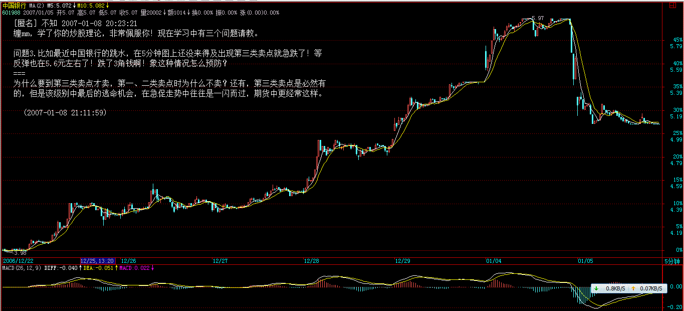 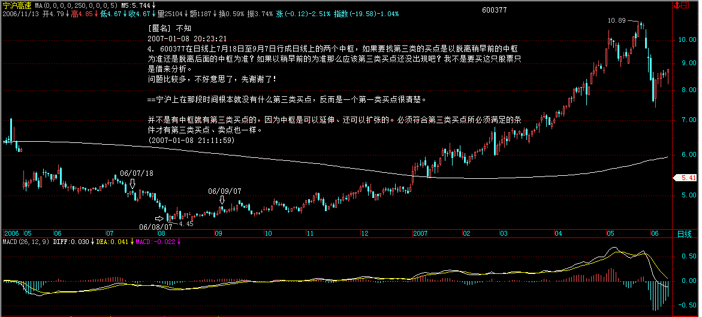
-
600377在日线上7月18日至9月7日行成日线上的两个中枢如果要找第三类的买点是以脱离稍早前的中枢为准还是脱离后面的
中枢为准？如果以稍早前的为准那么应该第三类买点还没出现吧？我不是要买这只股票只是借来分析。 问题比较多不好意思了先谢谢了！
==
宁沪上在那段时间根本就没有什么第三类买点反而是一个第一类买点很清楚。
并不是有中枢就有第三类买点的因为中枢是可以延伸、还可以扩张的。必须符合第三类买点所必须满足的条件才有第三类买点、卖点也一样。 (2007-01-08 21:11:59)
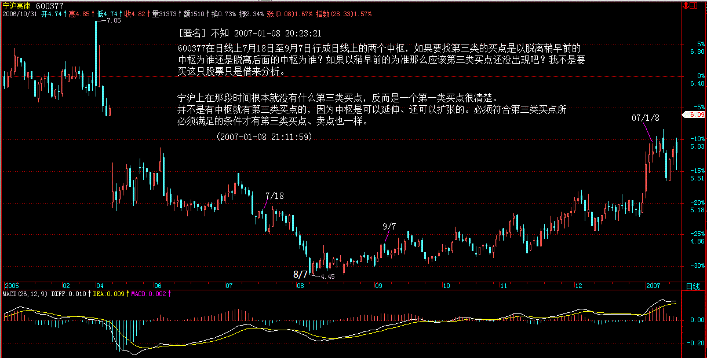
[匿名] 外科医生 2007-01-08 20:57:01
比如最近中国银行的跳水在5分钟图上还没来得及出现第三类卖点就急跌了！等反弹也在5.6元左右了！跌了3角钱啊！象这种情况怎么预防？ 同问多谢了
===
第三类卖点是最后逃命线逃了以后必然还要下跌这和已经跌了多少有什么关系？还有为什么一定要到第三类卖点才卖股票？第一、二类时去哪了？ (2007-01-08 21:14:56)
[匿名] 无言 2007-01-08 20:53:00
缠姐,今天怎么变19现象了,大家都赚钱,钱从哪里来呀,明天卖股票了.请教: 第三类买点有什么技术指标辅助确定吗?第一类是背弛形成的;第二类是黄白线回压到0轴附近,第三类呢?谢谢!
===
这不早说了？轮动。一线不动其他补涨。熊市心态千万别再有了。不要因为股票涨得多了卖卖股票唯一的原因就是卖点出现没出现卖点涨10000%也不卖。
第二个问题以后说。 (2007-01-08 21:17:49)
[匿名] kkk 2007-01-08 21:08:30
楼主好!俺是你的忠实粉丝,每天都来关注一下,现谈点固然看法: 在论语股票音乐以外,楼主的现实生活中除了性就没有其它的可说吗?知道老徐的博客为什么那么火吗?其实你的才华并不在她之下,年龄与她也应该差不多,只不过老徐很真诚的与大家交流生活感受,楼主也是大好人啊,为什么不与大家交流一些有益的生活感受呢?如能象老徐那样认真地写博,相信此博一定会火过孔博.
===
相而不相不相而相你是相还是不相？ (2007-01-08 21:19:09)
明天人寿被热捧是必然的至于07年的药是否06年的酒08年就知道了。 (2007-01-08 15:44:10)
人寿万一真有30元附近的价位任何人都该积极买入。但估计这种价位是不会有的。40元左右对于大资金来说一定要找机会配置一点50元左右开盘就是这种价位也不奇怪了如果要争夺市场的发言权对于特大基金也必须先抢部分筹码以后再找机会滩平加仓。
对于大资金来说有时候买股票不一定是为了马上挣钱市场的领导权才是最重要的。 (2007-01-08 21:28:18)
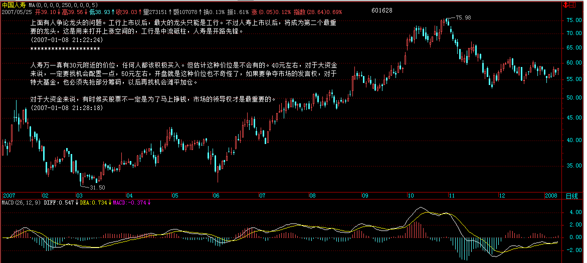
[匿名] 在路上 2007-01-08 21:22:28
思考题一：第三类买卖点有可能和同级别的第二类买卖点重合吗？
答:不能,第二类是形成中枢的高低点,第三类是次级趋势突破原中枢并回调时不触及中枢时产生的,所以不能.
思考题二：工商银行在12月22日构成日线级别第三类买点吗？
答:不能,因为在12月22日前的盘整并不构成日线中枢.
===
第一个问题请再思考。 (2007-01-08 21:29:11)
太晚了先下再见。 (2007-01-08 21:30:03)